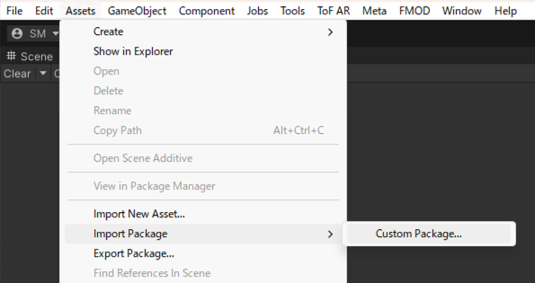

3. セットアップ
3.1. FF-SDK-Unityのセットアップ
3.1.1. unitypackageのインポート
- Unity EditorのメニューのAssets / Import Package / Custom Package…を選択し、.unitypackage ファイルをインポートします。
 - TextMesh Proのアセットのインストールダイアログが表示された場合は、インストールを行います。
unitypackageの種類と説明
| unitypackage | 説明 |
|---|---|
| FF-SDK-Unity_Core | FF-SDK-Unityコア機能 SDK動作に必ずインポートする必要があります |
| FF-SDK-Unity_Windows | USB有線接続版FeelFuse向け機能 3.5. USB有線接続版FeelFuse向けセットアップ （オプション） のセットアップを追加で実施してください |
| FF-SDK-Unity_MetaXR | Meta Questとの連携機能を使用する場合にインポートする 3.3. Meta XR SDKのセットアップ （オプション） のセットアップを追加で実施してください |
| FF-SDK-Unity_TofAR | ToF ARと連携した開発・デバッグ支援機能を使用する場合にインポートする 3.4. ToF AR SDKのセットアップ （オプション） のセットアップを追加で実施してください |
| FF-SDK-Unity_Samples | サンプルシーン |
3.1.2. OscCoreのunitypackageのインポート
- OscCore_vX.X.X.unitypackage を https://github.com/stella3d/OscCore/releases よりダウンロードしてインポートします。
3.2. FF-SDK-Unityのアップグレード
- Unity EditorのProjectビューの Commissure/HapticsSystem フォルダを削除します。
- Unity EditorのメニューのAssets / Import Package / Custom Package…を選択し、.unitypackage ファイルをインポートします。
3.3. Meta XR SDKのセットアップ （オプション）
Meta XR SDKを使用すると、Meta Questなどのヘッドマウントディスプレイで触覚体験ができるアプリケーションを開発することができます。
Meta XR SDKを使用する場合はMeta XR SDKのセットアップ手順に従って、セットアップを行なってください。
XR プラグインは Unity OpenXR プラグインの利用を推奨します。
https://developers.meta.com/horizon/documentation/unity/unity-project-setup
3.4. ToF AR SDKのセットアップ （オプション）
ToF AR SDKと対応スマートフォンを使用するとヘッドマウントディスプレイ非着用状態での開発・デバッグを効率化することができます。
- ToF AR SDKを以下のサイトよりダウンロードします。
https://tof-ar.com/ - TofAR_Base_vx.x.x_Android.unitypackage と TofAR_Base_vx.x.x_iOS.unitypackage をインポートします。
スマートフォンへのデプロイは行わないので、Unityのプロジェクト設定は変更不要です。
3.5. USB有線接続版FeelFuse向けセットアップ （オプション）
USB有線接続版FeelFuseを動作させるには、下記アセットをインストールします。